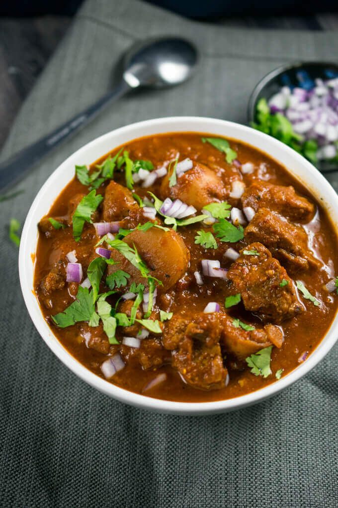

Seitan Stew

A hearty and comfortable recipe, that is perfect for the winter!
Seitan is king here, while an abundance of onions, carrots and leeks make up its delicious reign.
Ingredients
- Olive Oil
- White Wine
- Tomato Sauce
- 1 onion
- 4 cloves of garlic
- 4 carrots
- 1/2 a leek
- Around 15 cherry tomatoes
- 1 big block of seitan (or 300g)
- Available herbs and spices
Preperation
- Cut the onion and 2 cloves of garlic and sauté them in a bit of Olive Oil for 5 minutes in a pan
- Cut the carrots in thin half rounds and add them to the onions. Mix them and add a pinch of salt an Black Pepper
- Cut the leek into half rounds and add them to the pan. Cover the mixture with white wine and let it simmer for 10 minutes
- Meanwhile, cut the Seitan into little cubes and the cherry tomatoes into halves and add them to the Pan
- Mince the rest of the garlic cloves and add them to Pan. Mix for some seconds.
- Add 200ml of tomato sauce, mix for a while and add some water until it covers the whole mixture, or until it reaches a preferred thickness
- Add some chives, rosemary and thyme, a tablespoon of olive oil and honey and let it cook in low heat for 10 minutes